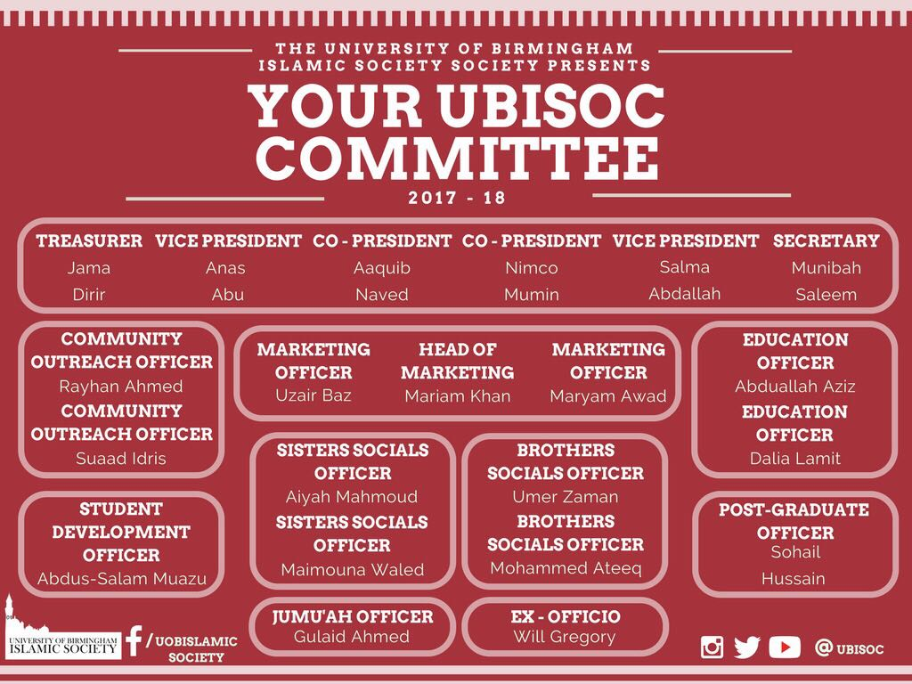

Introduction to the Committee
The University of Birmingham Islamic Society has a large and extremely hardworking committee dedicated to serving every Muslim student on campus.
We have around 20 positions with different positions split into teams concerning particular areas of the Islamic Society such as marketing. Each year, we elect a new committee for the following academic year at March during our Annual General Meeting. Anyone is free to run for a position so feel free to join our amazing committee by running for a role at our next AGM in March 2018.
You can find a diagram of the committee structure and our committee members for the year 2017/18 below:
You can find introductions to each committee member below. Please feel free to contact any of the committee if you have any ideas, questions or queries about anything at all!